카페 첸트랄(Cafe Central) 이야기 (2) - SNS와 공유 오피스
게시: 2026-08-20T06:30:44+09:00
트로츠키가 가난한 망명객 주제에 고급 카페였던 카페 첸트랄에 출근도장을 찍으며 하루 종일 거기 죽치고 앉아 있을 수 있던 이유는 (1) 당시 빈의 카페는 그럴 수 있는 분위기였다는 점과 (2) 트로츠키의 유명세 자체가 있었고 (3) 트로츠키는 직업 때문에 어쩔 수 없이 그래야만 했다는 3가지로 요약됩니다. 19세기 말 20세기 초 빈의 카페는 요즘의 SNS 역할을 했습니다. 인간이란 집단 생활을 하는 짐승이라서, 언제나 남의 이야기에 관심이 많고 남과 이야기를 주고 받는 것을 좋아합니다. 여러분이 지금 이 글을 읽고 계신 것도 그런 본능이 이끈 것입니다. 요즘은 인터넷과 SNS가 있어서 굳이 얼굴을 마주대고 이야기하지 않아도 지구 반대편 사람들 소식도 들을 수 있습니다만, 당시 오스트리아에서는 신문 외에는 그런 정보를 얻기가 어려웠습니다. 그리고 부자들이야 그런 신문들을 종류별로, 또 여러가지 언어로 된 외국 것까지 다 구독할 수 있었지만 어지간한 중산층 시민도 2~3종의 신문을 구독하는 것이 한계였습니다. 그러나 인터넷이 없던 시절, 정보에 목마른 사람들은 더 많은 신문을 읽고 싶어 했습니다. 요즘 서울의 카페가 단순히 커피를 파는 공간이 아니라, 일종의 도서관 역할도 하고 미팅룸 역할도 하는 것처럼, 당시 카페는 오스트리아 국내외의 거의 모든 신문을 여러 부씩 구비해놓고 손님들이 무료로 읽을 수 있도록 했습니다.
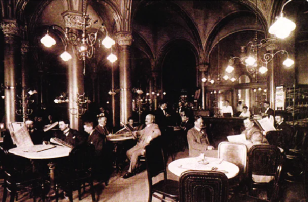
(1900년 경 카페 첸트랄의 실제 사진입니다. 어두컴컴한 다방에 아재들만 잔뜩 앉아서 신문을 보고 있네요. 요즘 같으면 망하기 딱 좋은 컨셉입니다.) 현재 서울의 카페 주인들이 '카공족'을 좋아하지 않는 것처럼, 당연히 당시 빈의 카페 주인들도 커피 한 잔 시켜놓고 하루종일 죽치고 앉아 공짜 신문을 읽는 한량들을 싫어하지 않았을까요? 꼭 그렇지는 않았습니다. 그래도 그런 카페에 와서 죽치고 있는 사람들은 신사 계급 사람들이 대부분이었습니다. 노동자 계급 사람들은 공장에서든 시장에서든 일을 해야 했으므로 그런 곳에서 몇 시간씩 신문 같은 것을 읽을 시간이 없었기 때문입니다. 따라서 대부분의 손님들은 체면을 중시하는 사람이었고, 몇 시간씩 앉아서 신문을 읽다보면 자연스럽게 점심시간이나 저녁시간이 되어 좀 더 이문이 남는 식사류를 시키게 되는 경우가 많았습니다. 또 카페 종업원들은 그런 손님들에게 신문을 가져다 주거나 물 한 잔 따라주고 짭짤한 팁을 받을 수 있었으므로 그것도 괜찮았습니다.
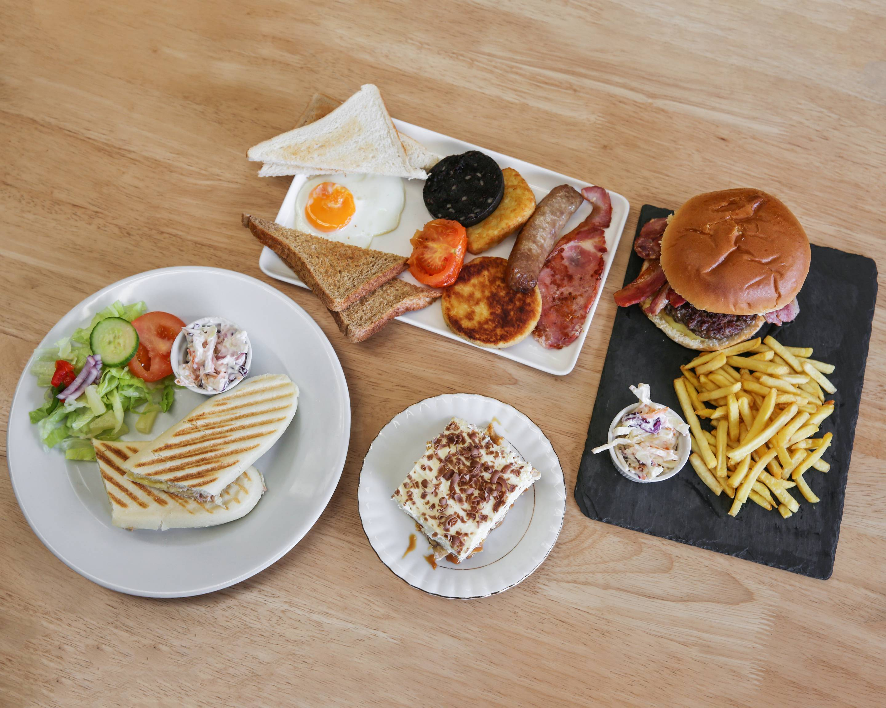
(카페 첸트랄에서 시킬 수 있는 식사 메뉴는 토스트부터 햄버거, 파스타까지 꽤 다양하다고 합니다. 저는 안 시켜봤습니다.)
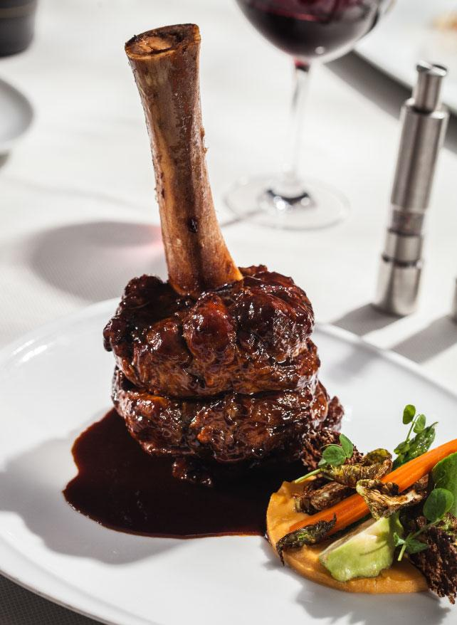
(가령 이런 것도 시킬 수 있다네요.)
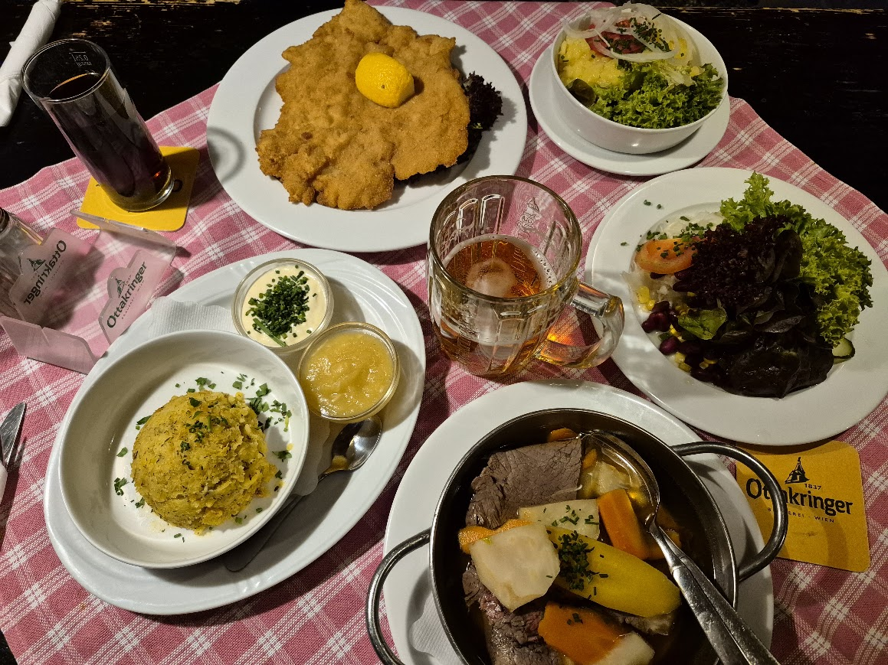
(이건 카페 첸트랄에서 시킨 것은 아니고, 제가 다른 식당에서 시켜본 요리입니다. 위는 유명한 오스트리아 돈까스인 슈니첼이고, 아래는 빈의 명물 요리인 타펠슈피츠(Tafelspitz)입니다. 오스트리아의 사실상 마지막 황제 프란츠가 좋아했다는 요리인데, 직역하면 판자 끝이라는 뜻이지만 정확하게는 그냥 우둔살 끝부분을 가리키는 고기 부위 명칭입니다. 그냥 쇠고기 우둔살 삶은 거에요. 맛은... 독일 음식이 다 그렇죠 뭐. 그냥 간장 넣고 대충 끓인 맛없는 곰탕맛입니다.) 당시 빈의 카페가 오늘날 SNS 역할을 했다는 점은 다른 점에서도 드러납니다. 사람들이 만나서 당대 현안에 대한 서로의 생각에 대해 듣고 잡담을 하고 친분을 쌓는 곳이 당시엔 카페였습니다. 현대 SNS에서도 저 같은 듣보잡 50대 아재보다는 유명 작가나 학자, 연예인 등의 셀럽의 SNS에 많은 사람이 몰립니다. 당시 카페에서도 동일한 현상이 있었습니다. 빈의 수많은 카페 중에서 경쟁을 이겨내고 많은 손님을 모으려면 호화로운 인테리어와 향기로운 커피도 중요했지만, 거기 가면 언제나 볼 수 있고 연이 닿으면 이야기도 나눌 수도 있는 유명 인사가 많이 앉아 있어아야 한다는 점도 매우 중요했습니다. 카페 첸트랄은 그렇게 많은 죽돌이 유명 인사 보유에 있어 타의 추종을 불허하는 명소였습니다. 카페 첸트랄에는 정신분석 학자 지그문트 프로이트 (Sigmund Freud) 같은 사람들도 자주 출입했지만, 지금도 카페 첸트랄 입구에 등신(等身) 석고상을 만들어 전시해놓은 시인 페터 알텐베르크 (Peter Altenberg)와 비평가이자 작가인 알프레트 폴가르(Alfred Polgar) 등 당대 유명 인사들이 마치 카페의 장식 소품 중 하나인 것처럼 앉아 있었습니다. 이들은 당대 돈 없는 신사들의 지적 게임이었던 체스광이기도 하여, 이들과 체스 실력을 겨루기 위해 찾아오는 손님들도 있었습니다. 러시아에서 온 공산 혁명가 트로츠키도 그렇게 호기심 많은 손님들을 끌어오는 낭만적 장식 소품 중 하나였습니다. 게다가 트로츠키 역시 상당한 수준의 체스 고수였고 여러 사람들과의 대국을 사양하지 않는 성격이었으므로 카페 첸트랄이 애지중지하는 셀럽이 될 수 있었습니다.
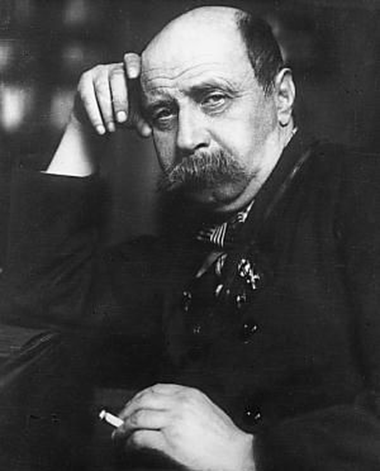
(실제 알텐베르크의 1907년 모습입니다. 그는 상업적으로는 성공적이지 못한 시인이자 극작가였으나, 유명세는 톡톡히 누려서 여기저기서 빚을 내어 생활하면서 그의 매력과 위트로 갚았다고 합니다. 한 마디로 놀고 먹는 백수였다는 소리지요. 평생 결혼 하지 않았고 (혹은 못 했고), 폐렴으로 인해 59세에 일찍 죽었습니다. 약간 아이러니하게도, 카페 첸트랄 죽돌이답게, 죽은 후에도 빈 첸트랄 묘지(Wiener Zentralfriedhof)에 묻혔습니다.)
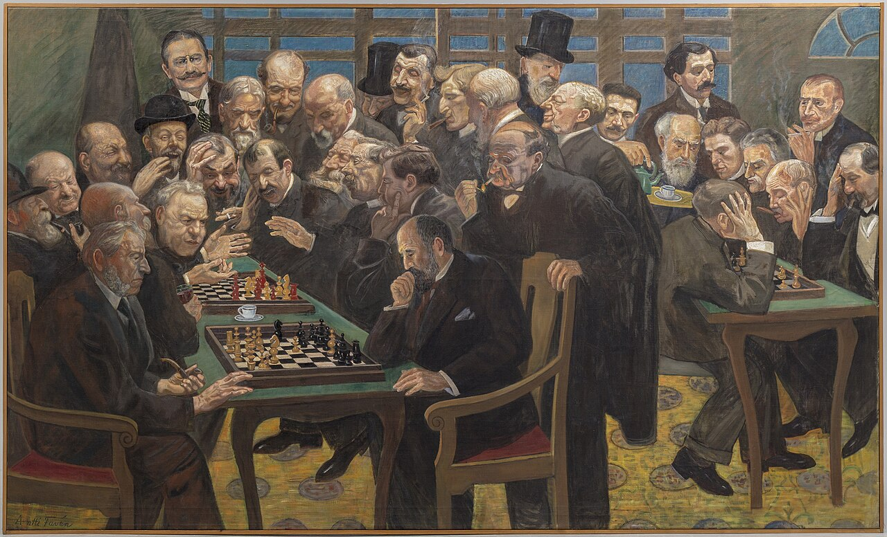
(이건 카페 첸트랄이 아니라, 고수들이 모여 체스판 벌이기로 유명했던 파리의 레장스 카페(Café de la Régence)를 묘사한 그림입니다. 18~19세기 유럽 전체의 체스 중심지가 저 레장스 카페였답니다. 빈이 유명하다고 해도, 파리만은 못한 것은 어쩔 수 없습니다.) 위와 같은 설명을 듣고 나시면 왜 카페 첸트랄 같은 고급 카페가 커피 한 잔 시켜놓고 하루종일 자리만 차지하고 있는 가난뱅이 손님 트로츠키를 박대하지 않았는지 이해가 가실 것입니다. 하지만 새로운 의문이 생기실 수도 있습니다. 알텐베르크도 트로츠키도, 대체 왜 거기 출근하여 하루종일 앉아 있었던 것일까요? 먹고 살기 위해서 일 안 하나요? 이건 현대 SNS에서도 동일한 의문이 드는 일입니다. 짧은 텍스트 위주의 SNS야 일하는 짬짬이 시간 중에도 올릴 수 있겠으나, 본격적인 유튜브/쇼츠/릴스 같은 것은 만드는데 상당한 시간과 비용이 들어가는 일이던데, 그런 거 만들어 올리는 사람들은 일도 안 하고 어떻게 먹고 사는 것일까요? 여러분도 그런 유튜브/쇼츠/릴스 같은 것이 사실은 광고를 통해서 돈이 되는 사업이라는 것을 이미 잘 알고 계실 것입니다. 좀 비하해서 이야기하자면 그런 SNS 플랫폼이 소위 온라인 인플루언서들에게 사람들 끌어오는 '삐끼 수당'을 주는 셈이지요. 당시 카페 첸트랄과 현대 SNS의 공통점은 여기서는 적용되지 않습니다. 카페 첸트랄에 죽치고 앉아 있다고 해서 카페 사장이 알텐베르크나 트로츠키에게 삐끼 수당을 주지는 않았거든요. 수당도 없는데 왜 알텐베르크와 트로츠키는 죽돌이 노릇을 했을까요? 그 둘은 모두 가난했으므로 사실 커피값도 부담스러웠고, 그래서 빈의 명물 크림 커피인 비너 멜랑쉬(Wiener Melange)도 못 시키고 언제나 블랙커피 한 잔만 시켰다고 하던데요. 실은 그 둘이 카페 첸트랄에 출근하다시피 한 이유는 그들의 가난과 함께, 열악하던 당시 빈의 주택난 때문이었습니다.
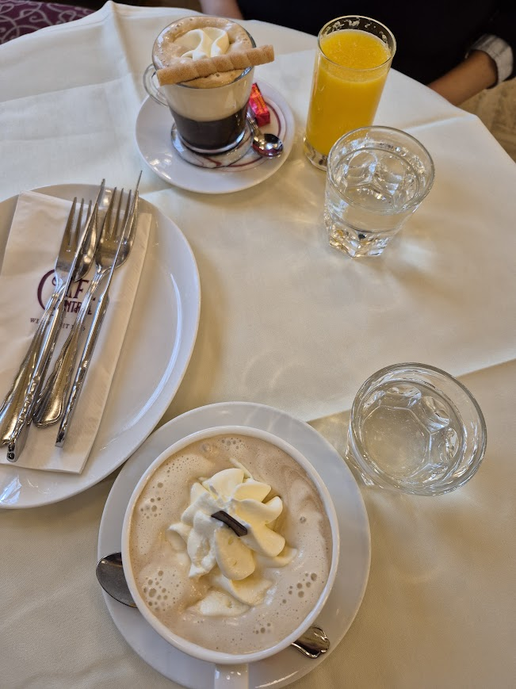
(아래의 커피가 아인슈페너(Einspänner)입니다. 직역하면 흔히 말하는 몽키스패너의 그 스패너 맞습니다. 그런 스패너 들고 일하는 마부들이 마시는 커피라고 해서 그런 이름이 붙었다는데, 흔들리는 마차 위에서 커피가 쏟아지지 않도록 진한 에스프레소 위에 차가운 생크림을 얹은 것이라고 합니다. 보통 말하는 '비엔나 커피'입니다. 섞지 말고 그냥 마시는 것이 정석이래요. 위는 뭐였는지 까먹었습니다.) 현대적으로는 통상 중위소득의 50% ~ 150% 구간의 소득을 올리는 사람들을 중산층이라고 분류하는 경우가 많습니다. 그러나 19세기 말 ~ 20세기 초 기준으로는 가장 분명한 기준이 따로 있었습니다. 바로 하녀 고용 여부였습니다. 당시 빈의 사회 계급을 굳이 나눈다면 다음과 같이 분류할 수 있습니다. 1) 하층 노동자층 (Arbeiterschaft) : 연소득 800 ~ 1,200 크로네 정도 (3,200만 원 ~ 4,800만 원), 전체 빈 인구의 약 80% 숙련 노동자나 하급 직원의 소득 수준으로, 생계 유지가 아슬아슬한 상태였습니다.
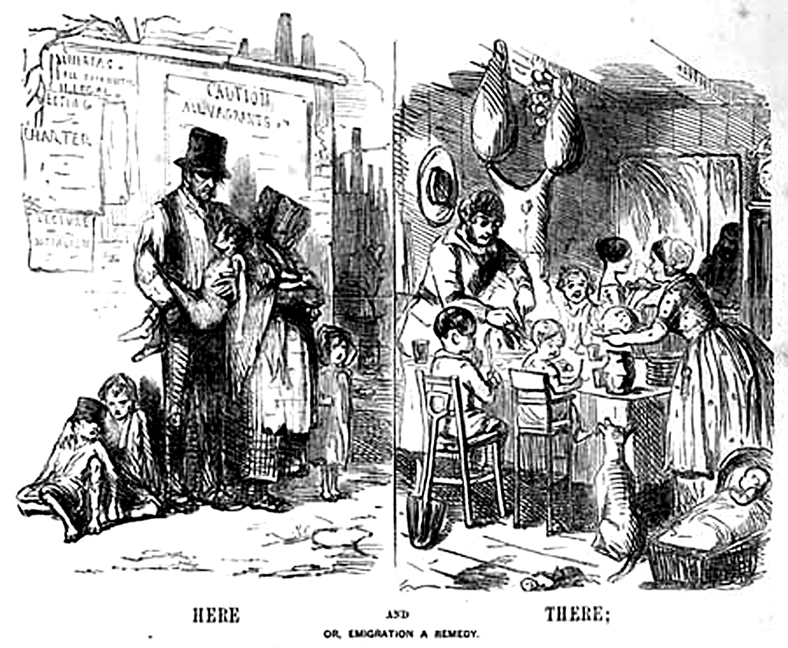
(이건 1840년 전후, 영국 신문에 실린 만화입니다. 영국에서는 저렇게 길바닥에 나앉은 노동자 가정이, 뉴질랜드에 가면 애들 잘 먹이면서 행복하게 살 수 있다는 것을 보여주는 삽화지요. 아마 허위 과장 광고겠지만, 뉴질랜드처럼 넓은 땅에 가서도 노동자들의 집은 좁네요.) 2) 하위 중산층 (Kleinbürgertum, 소시민, 소위 '쁘띠 부르조아'(petit bourgeois): 연소득 1,500 ~ 3,000 크로네 (6,000만 원 ~ 1억 2,000만 원), 전체 빈 인구의 약 15% 소상인, 하급 공무원, 초급 교사, 사무원 등으로, 빈곤은 면했으나 주택 내에 하녀를 상주시키는 등 전형적인 신사계급의 품위를 유지하기에는 소득이 부족했습니다.
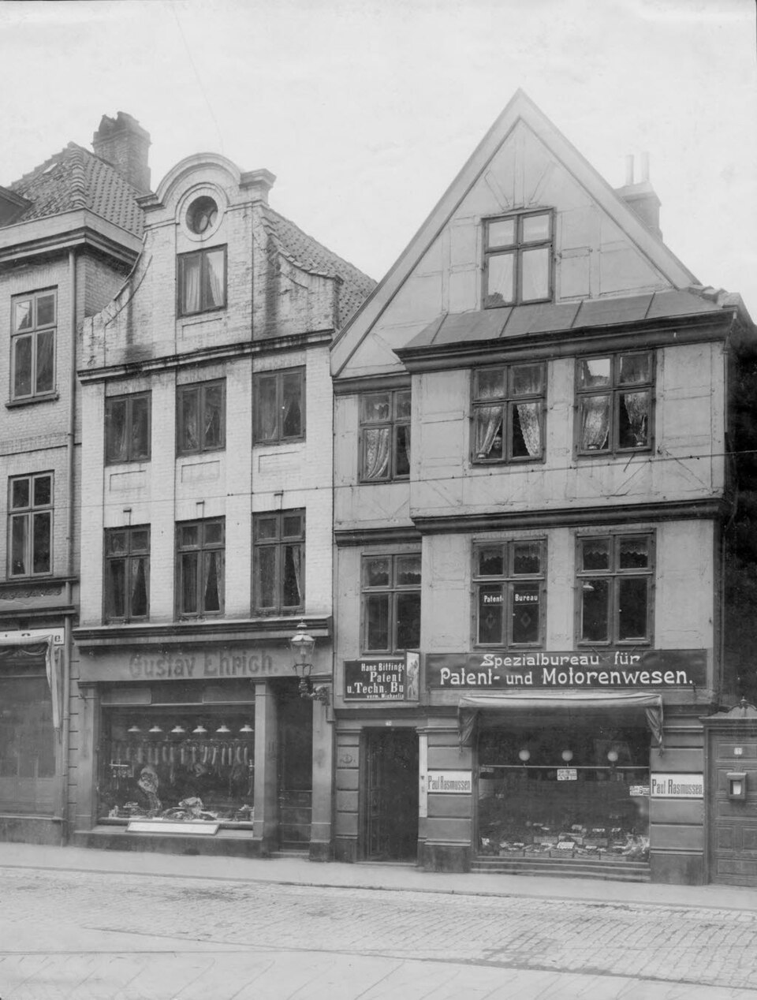
(하위 중산층, 소위 클라인뷔르거툼(쁘띠 부르조아)는 이런 주택에 살았습니다. 저 정도면 아주 넓고 쾌적한 것 같습니다만, 저 주택을 통째로 한 가족이 쓰는 것이 아니라는 점이 문제지요. 1904년 킬(Kiel) 항구의 모습입니다.) 3) 상위 중산층 (Großbürgertum, Bildungsbürgertum, 그랑 부르조아, 교양시민계급): 연소득 4,000 ~ 10,000 크로네 이상 (1억 6,000만 원 ~ 4억 원 이상), 전체 빈 인구의 약 5% 의사, 변호사, 대학 교수, 고위 공무원, 중견 사업가 등으로서, 가정부/하녀(Dienstmädchen) 최소 1명을 상주시키고, 소위 주거 상급지에 방 3~5개짜리 주택을 마련하는 것이었습니다. 이를 유지하려면 최소 연 4,000 크로네 이상의 가구 소득이 필요했으며, 이는 일반 노동자 평균 임금의 약 4~5배에 달하는 금액이었습니다.
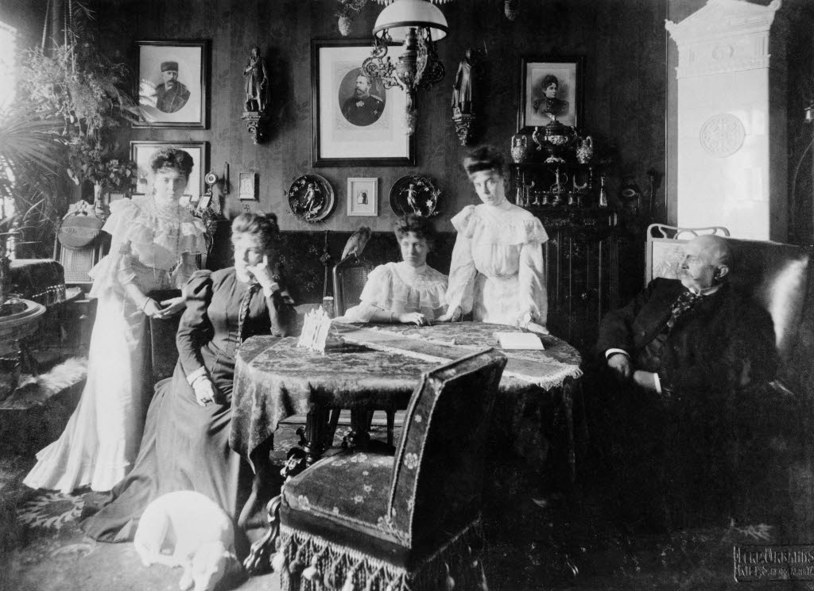
(상위 중산층, 소위 그로스뷔르거툼(그랑 부르조아)의 가정은 이랬답니다. 역시 1895년 킬(Kiel) 항구의 어느 가정입니다. 옷과 헤어스타일도 그렇지만 벽에 걸린 초상화 보십시요. 19세기 말 영국 사회가 배경인 서머셋 모옴의 '인간의 굴레' 중에 의대생인 주인공이 가난한 노동자의 집을 방문했는데, 벽에 아무 그림도, 심지어 잡지에서 오린 그림조차 붙어 있지 않았다고 묘사하는 장면이 생각납니다.) 이렇게 빈 시민들 절대 다수는 노동자층이거나 하위 중산층으로서, 매우 어렵게 살 수밖에 없었고 당연히 집도 좁고 초라했습니다. 그러니까 서류를 읽고 쓰는 것이 직업인 사람들의 경우, 상위 중산층 정도 되는 사람들은 집에 서재를 갖추고 하녀가 끓여 바치는 커피를 마시며 우아하게 읽고 쓰는 일을 할 수 있었으나, 알텐베르크나 트로츠키처럼 집이 좁고 남루한 경우엔 책상도 변변치 않고 아이가 빽빽 울어대는 소리 등에 시달리느라 일을 할 수가 없었던 것입니다. 그래서 아예 카페 첸트랄로 출근해서 거기서 시도 쓰고 기사도 쓰고 사람들과 만나 정보도 나누고 문학과 혁명에 대해 토론도 하고 했던 것입니다.
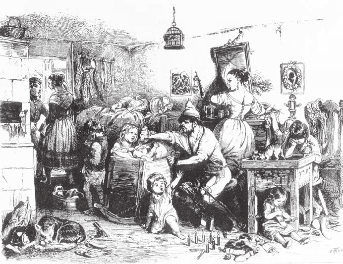
(뭐... 우리 모두 다 이러고 사는 거죠 뭐. 다만 이런 환경 속에서 기사를 쓰고 시를 쓰고 공부를 하는 것은 어렵겠지요.) 이건 현재 한국에서도 비슷합니다. 사업상 만남이든 연애를 위한 만남이든 남에게 자랑스럽게 보여줄 정도의 넓고 깔끔하고 화려한 집안 살림을 갖춘 사람이 별로 없잖아요? 그래서 우리도 그런 만남은 주로 대로변의 유명 카페에서 갖곤 하지요. 그러나 우리는 트로츠키 같은 유명 인사가 아니므로 커피 한 잔 시켜놓고 거기서 하루종일 랩탑으로 뭔가를 끼적거린다면 쫓겨나기 딱 좋습니다. 그래서 요즘엔 공유 오피스가 있지요. 커피 30잔 값을 내느니 그 돈으로 한 달치 공유 오피스 구독을 할 수도 있습니다. 그러니까 알텐베르크나 트로츠키 같은 인물들에게는 카페 첸트랄이 일종의 공유 사무실 역할을 했던 것입니다. 실제로 아예 우편물을 받을 주소지를 카페 첸트랄로 해놓는 죽돌이 손님들도 많았습니다. 웨이터들이 그런 우편물도 받아주었으니까요.. 그런데 당시 빈의 주택 상황이 어땠길래 트로츠키는 카페 첸트랄로의 출근을 결심할 정도였을까요? 그 이야기는 다음 주로 이어집니다.
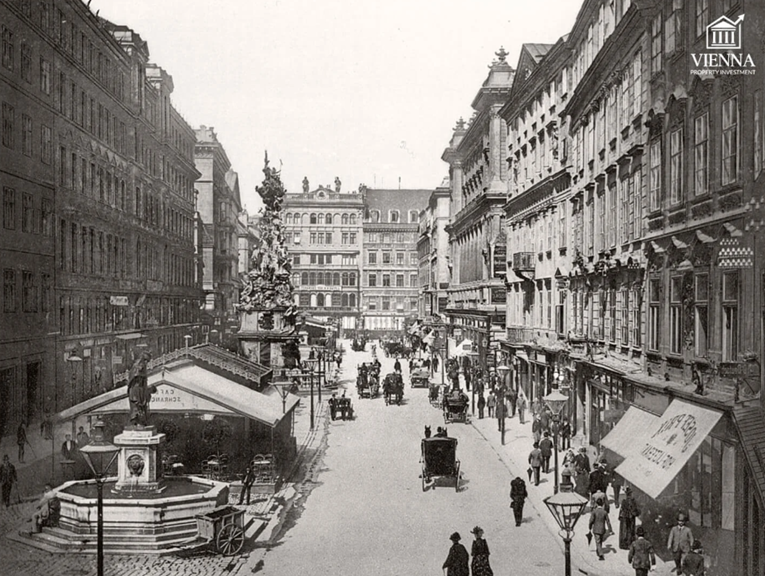
(19세기 말 빈의 거리 모습입니다. 거리 양쪽의 촘촘한 창문들은 마치 사무실 건물 같습니다만, 대부분 주택이었습니다.)
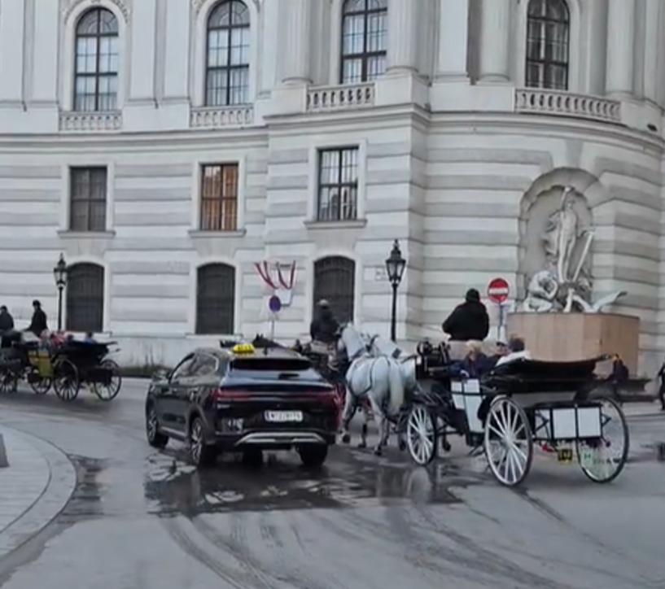
(작년 가을에 빈에 갔을 때 순간적으로 찍은 사진입니다. 관광용 전통 마차 옆을 중국제 BYD 전기 택시가 지나가더군요. 뭔가 상징적이라서 찍어 봤습니다. 빈에 가보면 거리는 비교적 깨끗한데 다만 저런 저런 마차 때문에 말똥 냄새가 나는 경우가 많았습니다. 그래서인지 여름에는 파리가 매우 많대요. 아마 위의 흑백 사진 속 거리에서도 말똥 냄새가 심했을 것 같습니다.)